library( tidyverse )
library( forcats )
theme_set( theme_minimal() ) Non-Parametric & Counting Statistics
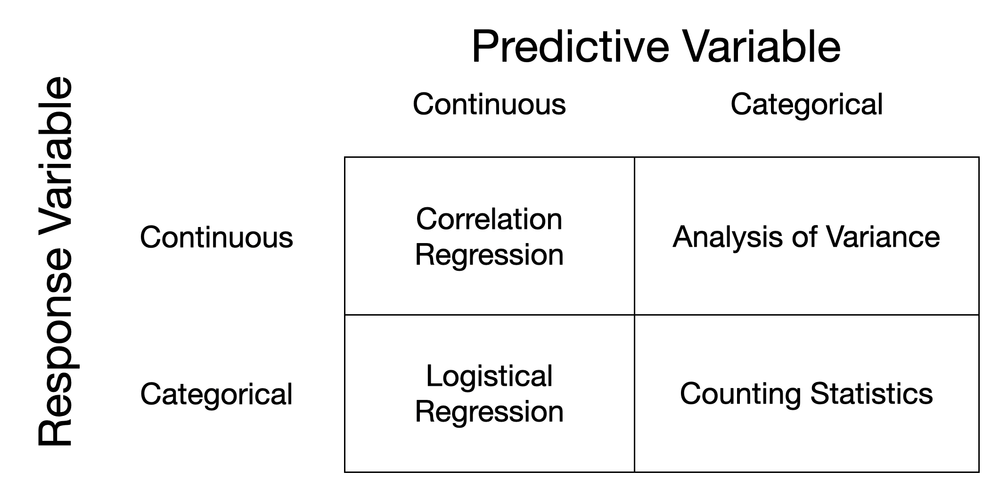
Counting, or ‘Non-Parametric’ Statistics
To date, we’ve been talking about the kinds of statistical approaches we use based upon the kind of data that we have for predictors and responses. Keeping it really simple, the graphic below attempts to capture this dynamic.
In this display, counting statistics are those that have factor data for both predictors and responses. However, the methods that we use in this quadrant, like \(\chi^2\) tests, are a small fraction of available methods that we can classify as NonParametric statistics.
Non-parametric counting statistics are essential tools in data analysis because they provide robust methods for understanding data without making strong assumptions about the underlying distribution. Many traditional statistical methods rely on parametric assumptions, such as normality, homoscedasticity, or linearity. However, real-world data often violate these assumptions due to skewness, outliers, or categorical variables. Non-parametric methods excel in these scenarios by leveraging the rank or order of data rather than its precise values, making them ideal for analyzing ordinal data, small sample sizes, or data sets with unknown distributions.
Counting statistics, like chi-square tests, Fisher’s exact test, or Wilcoxon rank-sum tests, allow researchers to test hypotheses about relationships or differences without assuming normality. For example, in environmental studies or survey analysis, datasets may include counts of species occurrences, categorical survey responses, or presence/absence data. Non-parametric methods ensure reliable results in these cases, enabling data-driven decisions even with non-normal or heterogeneous data that extend beyond just the lower right quadrant of the image above.
So let’s start simple and I’ll walk through a set of these kinds of models and highlight how we can apply a non-parametric approach to data whose identity may suggest other parametric statistics would be appropriate but whose normality or properties suggest that we not use those more traditional methods.
The Binomial Test
We’ve discussed the Binomial as part of the underlying generative functions for Bayesian Statistics already, but let’s revisit it for just a moment to get more specific on its general status. As a reminder, this is a test where the outcomes can be classified into either “Group A” or “Group B” (a 2-level factor in R).
Assumptions
The binomial test assumes:
- The \(n\) samples are mutually independent.
- Each sample has an underlying probability, \(p\), of being classified in “Group A” and a probability of \(1-p\) of being assigned to “Group B”.
The test statistic for this analysis is the number of values observed in “Group A” as a count. Because we are testing for the value of \(p\) (or our confidence in the range of values it can assume), the null hypothesis is:
\(H_O: p = \hat{p}\)
In R, we can test this using the binom.test() function, whose signature is:
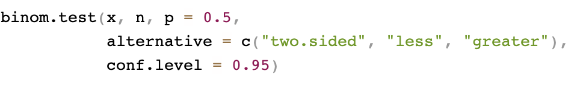
You can either give the function a single values for x and n or you can have x be a 2-element vector and skip the n part.
Borrowing from a previous example, let’s assume we are sampling fish in the James River. The hypothesis is that the frequency of catfish is
\[ p_{catfish} = \frac{N_{catfish}}{N_{catfish} + N_{other}} = \frac{37}{50} \approx 0.74 \]
So, if we were to go out and do some more sampling, the null hypotehsis would be:
\(H_O: p_{catfish} = 0.74\)
Let’s assume you just got back from a great sampling day and found the following data.
catfish <- 52
non_catfish <- 47 To test if this sampling exercise is consistent with the previous assumption of a 74% catfish presence, we do:
samples <- c( catfish, non_catfish )
p_catfish <- 0.74df <- data.frame( Counts = c( samples, 0.74 * sum(samples), ( (1-0.74) * sum(samples) )),
Fish = c("Catfish", "Other", "Catfish", "Other"),
Group = c("Observed","Observed", "Expected", "Expected") )
ggplot( df,
aes(Fish,Counts, fill=Group) )+
geom_bar( position="dodge", stat="identity") 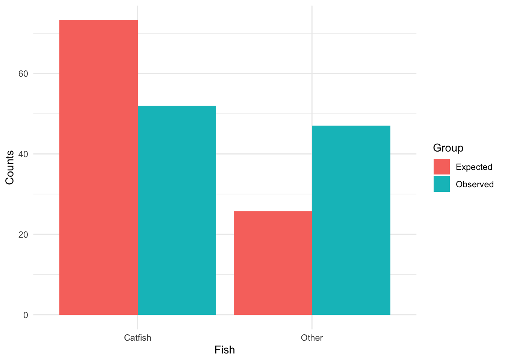
fit <- binom.test(x=samples, p = p_catfish )
fit
Exact binomial test
data: samples
number of successes = 52, number of trials = 99, p-value = 5.007e-06
alternative hypothesis: true probability of success is not equal to 0.74
95 percent confidence interval:
0.4223973 0.6265570
sample estimates:
probability of success
0.5252525 Whose results suggest that \(p_{catfish} \ne 0.74\) and we reject the null hypothesis. Our data subbest, from the samples we provided, that the observed \(p_{catfish}\) falls within the interval of 0.422 - 0.627.
For examples with more than two “Group”s, there is a multinomial test as well, but the function is not one built into R and you’ll want to check out the Multinomial package for that function.
Contingency Tables
Contingency tables are another counting approach, where your data can be classified into one or more categories. Often it is taken as a comparison between populations. So, in keeping with our fish theme, let’s assume we went to another river and did another sampling run on catfish. In general, we are not limited to “Group A” vs “Group B” but we will use it for continuity here.
Our sampling can be categorized as follows for the two populations of samples we’ve collected.
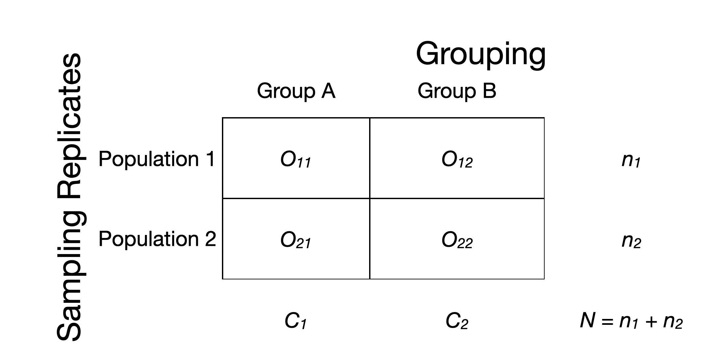
The values above are Observerd counts of observations in each pair of categories. Every fish is talled into the grouping (catfish vs not) and the location it was sampled (population 1 vs population 2). The total number of sampels at each population is \(n_1\) (in the data it was $n_1 =$99) and \(n_2\) (to be shown below) and the total number of samples that are catfish is \(C_1 = O_{11} + O_{21}\) and not catfish as \(C_2\) which also happens to be \(N - C_1\) (for completeness).
Again, here we have 2 rows and 2 columns, but this can be extended to larger numbers of groupings and sampling population as necessary and the analysis is the same.
In this simple case, the null hypothesis is not about the exact value of \(p_{catfish}\), as in the binomial, but rather that the frequency of catfish in Population 1, let’s define this as \(p_1\) is equal to the probabilty of sampling a catfish at Population 2, which we define as \(p_2\).
\(H_O: p_1 = p_2\)
I’ll expand this to cases beyond a 2x2 contingency below.
The Assumptions
The assumptions for a contingency table analysis are:
- Each sampling is a random sample.
- Any pair of samples are mutually independent.
- Each sample is unambiguously categorized into one, and only one, Grouping and Replicate.
To run this test in R we use the chisq.test() function, whose signature is as follows:
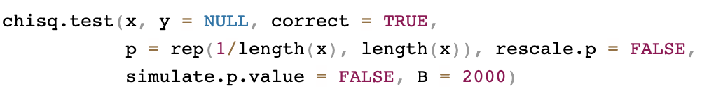
Where for our example, we will use it by passing a 2x2 matrix of observations as x. Let’s say I went out to another site and did 50 more samples and found 32 catfish.
Here is a matrix with these numbers. I’m going to decorate it with row and column labels for clarity.
Observed <- matrix( c(52, 47, 32, 18), nrow=2, byrow = TRUE)
rownames( Observed ) <- c("Population 1", "Population 2")
colnames( Observed ) <- c("Catfish", "Other")
Observed Catfish Other
Population 1 52 47
Population 2 32 18Our expectations are based on the \(p_{catfish} = 0.74\) and can be used to create an Expected value for each of the cells in the matrix above. For example, the expected value for the number of catfish from Population 1 would be \(n_1 * 0.74\) and for non-catfish would be \((1-0.74) * n_1\). We can do the same for the second site.
n1 <- 52 + 47
n2 <- 32 + 18
Expected <- matrix( c( 0.74 * n1,
(1-0.74) * n1,
0.74 * n2,
(1-0.74) * n2), nrow=2, byrow = TRUE)
rownames( Expected ) <- c("Population 1", "Population 2")
colnames( Expected ) <- c("Catfish", "Other")
Expected Catfish Other
Population 1 73.26 25.74
Population 2 37.00 13.00So, in some sense, we set the underlying probability of catfish in either locale to \(0.74\). If the observed values are close to the expected, then the data would be consistent with what is expected from the underlying hypothesis. If they are not close, then the data data are deviating. The amount of deviation is what we will be using as a test statistic here and it is a measure of:
- How far apart \(O_{xy}\) is from \(E_{xy}\),
- Standardized by the magnitude of the \(E_{xy}\).
Giving us the test statistic:
\[ T = \sum_{i=1}^r\sum_{j=1}^c\frac{(O_{ij} - E_{ij})^2}{E_{ij}} \]
The subscripts account for the number of rows (\(r\)) and columns (\(c\)) for any arbitrary sized table beyond the 2x2 example we have here. We can estimate the test statistic in R direclty, as:
T <- sum( (Observed - Expected)^2 / Expected )
T[1] 26.32813This test statistic is expected to be equivalent to a \(\Chi^2\) statistic with \((r-1)(c-1)\) degrees of freedom. We haven’t really estimated this directly yet, so here is how you’d figure out the probability of this test statistic.
alpha <- 0.05
p <- 1.0 - alpha
critical.value <- qchisq( p ,1)
critical.value[1] 3.841459You’ve probably seen this value before; it is a common one that we use in teaching basic Biology courses when we do Mendel’s pea phenotypes. So, the test statistic is $T =$26.3281253 and the critical value is 3.8414588, so we would Reject H_O that the fraction of catfish/not-catfish from Population 1 is not the same as observed in Population 2.
But, we are still stuck with the \(\alpha = 0.05\) issue and we’d probably rather have the actual p-value for the observed Test statistic, \(T\).
p.value <- 1.0 - pchisq( T, df=1 )
p.value[1] 2.88063e-07Notice I’ve used the qschisq function to get hte critcal value for some probability and the pchisq to the probability associated with an observed value. Every distribution has p* and q* functions associated with them and can be used to find critical values and probabilities if you need to do it manually.
In the real world, you’ll probably be taking the data from a larger data.frame object where you collected additional data. Here is a sample, where the species and location are factors.
df <- data.frame( Sample = 1:149,
Species = factor( c( rep("Catfish", 52), rep("Other", 47),
rep("Catfish", 32), rep("Other",18) ) ),
Site = factor( c( rep("Population 1", 99), rep("Population 2", 50))),
Measurement = rnorm(149,mean=12, sd=3))
summary( df ) Sample Species Site Measurement
Min. : 1 Catfish:84 Population 1:99 Min. : 5.074
1st Qu.: 38 Other :65 Population 2:50 1st Qu.: 9.803
Median : 75 Median :12.076
Mean : 75 Mean :12.158
3rd Qu.:112 3rd Qu.:14.324
Max. :149 Max. :20.175 head(df) Sample Species Site Measurement
1 1 Catfish Population 1 12.298630
2 2 Catfish Population 1 15.180844
3 3 Catfish Population 1 16.319885
4 4 Catfish Population 1 9.803299
5 5 Catfish Population 1 11.980147
6 6 Catfish Population 1 8.229584It is easy to grab the tabular data, and configure it as we did above using the table() functions.
table( df$Site, df$Species )
Catfish Other
Population 1 52 47
Population 2 32 18There are a few caveats that we need to make here. First, this appraoch requires that we have a sufficient number of observations in each of the cells. The longest running recommendation comes form Cochran1, who suggested that any time you have an \(E_{ij} \le 1\) or if more than 20% of the \(E_{ij} \le 5\), there may be some issues with statistical power and the approximation for the \(\Chi^2\) statistic may be poor. In those cases, perhaps a permutation approach would be more appropriate.
NonParametric Eqivallent Approaches
I’m going to use a couple of examples here to show how we can use counting statistics and ranks for methods where we intended to use parametric approaches like a t-test, correlation, regression, and analysis of variance but the data were not suitable for those methods.
Spearman Test for Ranked Correlation
When we discussed correlation data (e.g., continuous predictors and response variables), I did point out that there was another kind of correlation statistic that uses ranks (the mode="spearman") instead of the raw data (the Pearson-Product Moment approach which is the default). As we saw before, there is an option in the normal cor.test function that allows you to use a rank-based analysis instead of the normal Pearson Product-Moment approach.
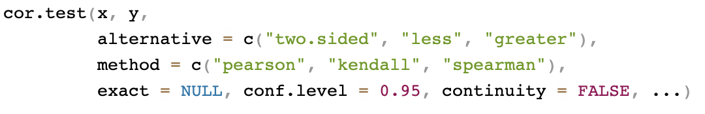
This approach, basically, orders the magnitude of both predictor and response and assigns a rank (e.g., \(1^{st}, 2^{nd}, \ldots N^{th}\)) for both variables and then estimates the relationship by correlating the ranked values instead of the raw values.
For brevity, I’ll not give an example and have you look back at the correlation lecture for more information.
Non-Parametric Regression
There are a few different methods for estimating linear regression models via non-parametric approaches. We’ve seen one common approach whenever we used the stat_smooth() function in ggplot(). By default, it uses the loess() local smoother approach.
iris |>
ggplot( aes(Sepal.Length, Sepal.Width) ) +
geom_point() +
stat_smooth()`geom_smooth()` using method = 'loess' and formula = 'y ~ x'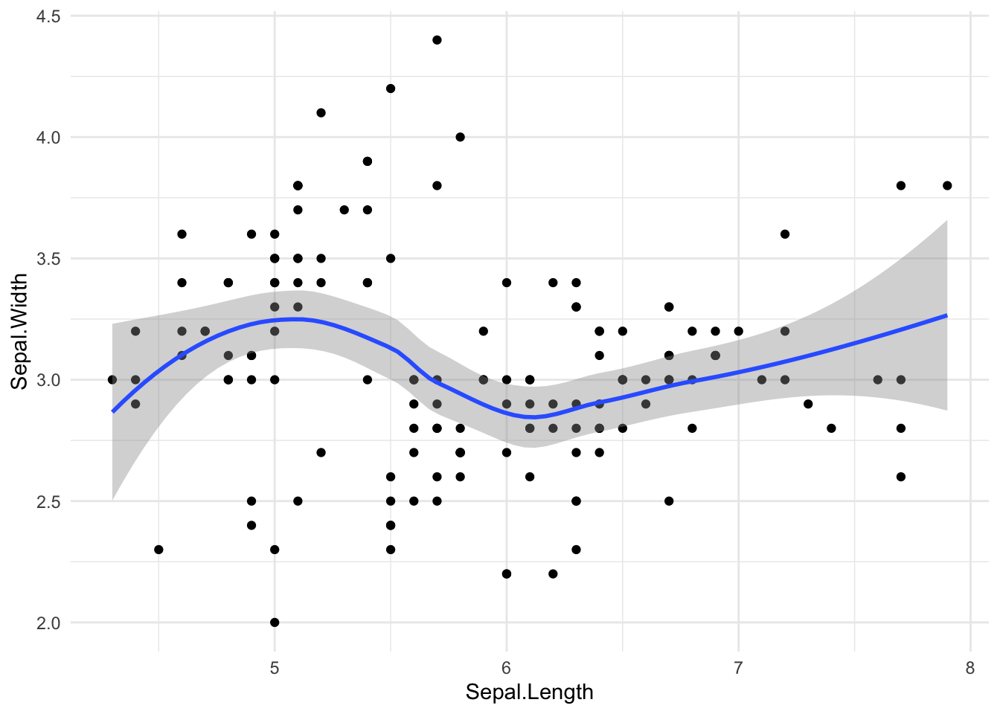
In a lm(), the goal is to use least cost approaches to minimize the error variance across all the data simultaneously.
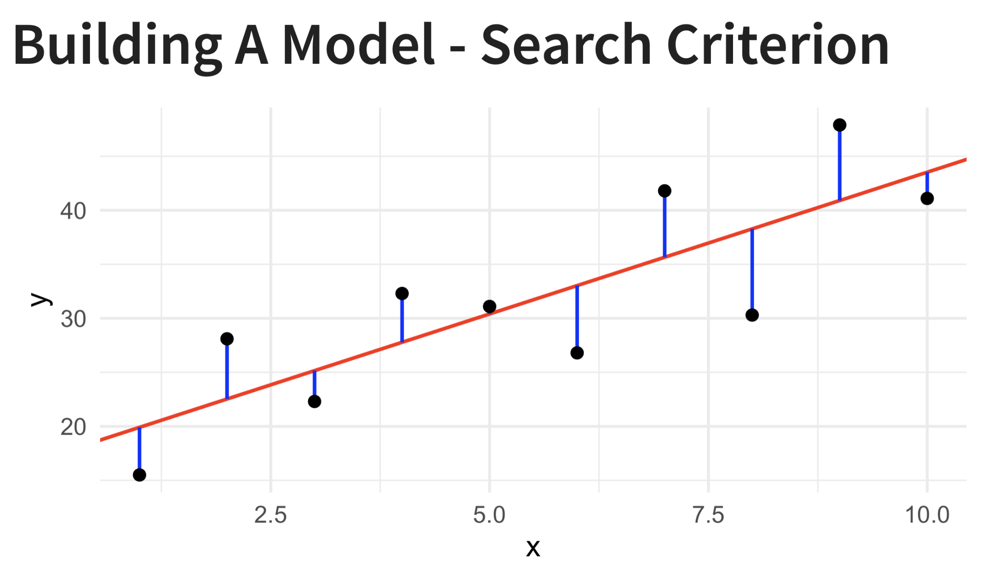
LOcal regrESSion
The loess() approach looks at a local window for estimating the formula of the line along with a moderatly high-dimensional polynomial.
\[ \hat{y} = \hat{\beta}_O^{x} + \hat{\beta}_1^{x}x_i \]
The function has a signature similar to that we saw in lm() for normal regression.
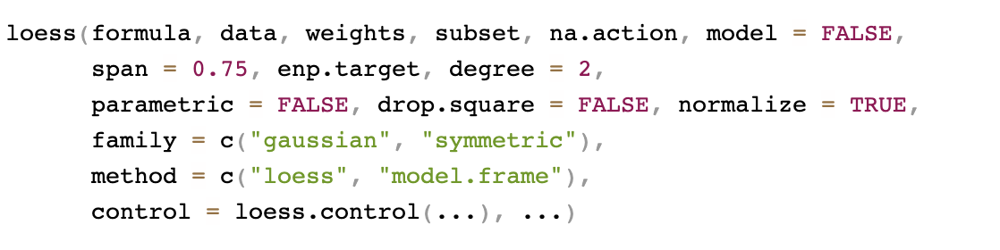
Notice the optional value for span, which defines the size of the local window.
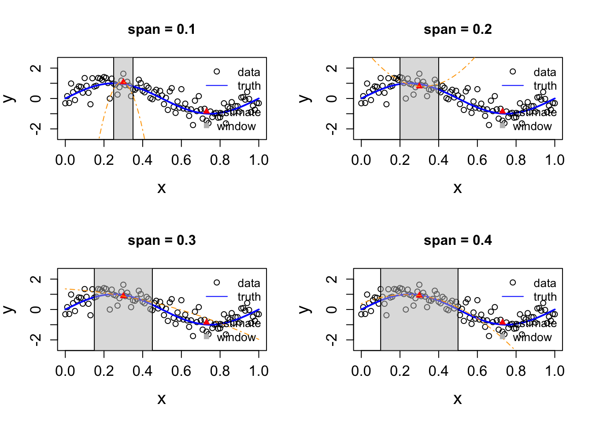
Fitting A loess Model
fit <- loess( Sepal.Width ~ Sepal.Length, data=iris)
fitCall:
loess(formula = Sepal.Width ~ Sepal.Length, data = iris)
Number of Observations: 150
Equivalent Number of Parameters: 4.74
Residual Standard Error: 0.4172 Let’s look at the consequence of the span parameter.
loess.spans <- function(x, y, s){
nobs <- length(y)
xs <- sort(x, index.return = TRUE)
x <- xs$x
y <- y[xs$ix]
lo <- loess(y ~ x, span = s)
data.frame(Sepal.Length = x, Sepal.Width = lo$fitted, span = s)
}
rbind( loess.spans( iris$Sepal.Length, iris$Sepal.Width, s = 0.2 ),
loess.spans( iris$Sepal.Length, iris$Sepal.Width, s = 0.3 ),
loess.spans( iris$Sepal.Length, iris$Sepal.Width, s = 0.4 ),
loess.spans( iris$Sepal.Length, iris$Sepal.Width, s = 0.5 ),
loess.spans( iris$Sepal.Length, iris$Sepal.Width, s = 0.6 ),
loess.spans( iris$Sepal.Length, iris$Sepal.Width, s = 0.7 ),
loess.spans( iris$Sepal.Length, iris$Sepal.Width, s = 0.8 ) ) |>
mutate( span = factor( span, ordered=TRUE )) |>
ggplot( aes(Sepal.Length, Sepal.Width) ) +
geom_point( data = iris, ) +
geom_line( aes(color = span ), lwd=1) 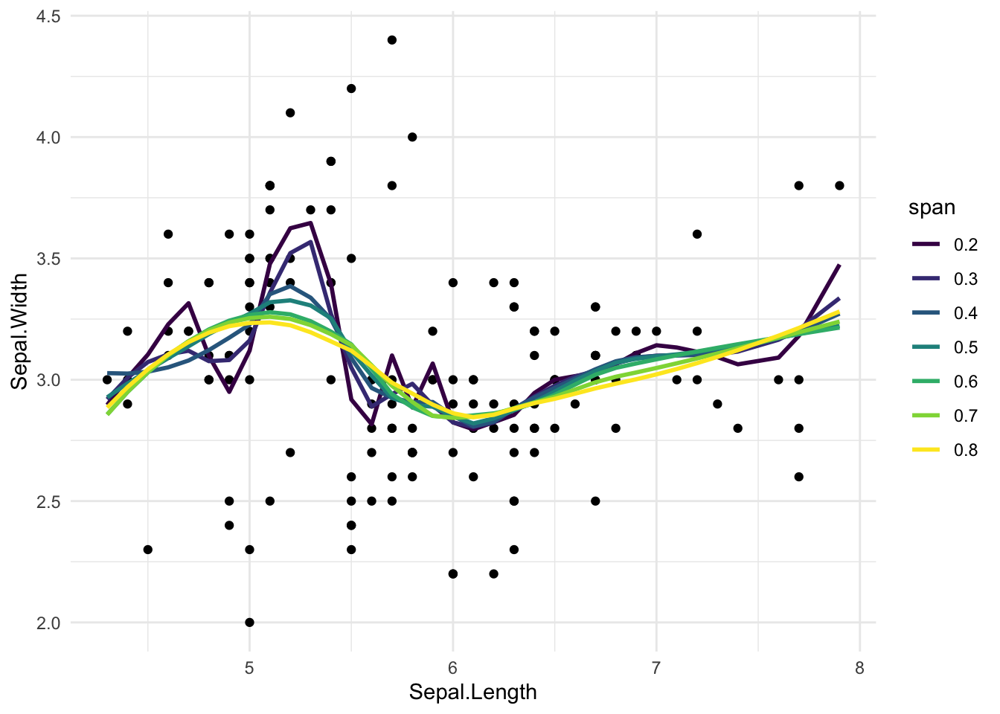
One method suggested to figure out what an optimal value of span would be is based upon a generalized cross validation (GCV) approach.
\[ s = \frac{ \frac{1}{N} \sum_{i=1}^N (y_i - \hat{y}_{i,s})^2 }{ (1 - \frac{v_s}{n} )^2 } \]
where \(v_s = \sum_{i=1}^N h_{ii,s}\) is the trace of the idempotent \(\mathbf{H}\) Hat Matrix.
Here is a function that does this for the general loess model.
loess.gcv <- function(x, y){
nobs <- length(y)
xs <- sort(x, index.return = TRUE)
x <- xs$x
y <- y[xs$ix]
tune.loess <- function(s){
lo <- loess(y ~ x, span = s)
mean((lo$fitted - y)^2) / (1 - lo$trace.hat/nobs)^2
}
os <- optimize(tune.loess, interval = c(.01, 99))$minimum
lo <- loess(y ~ x, span = os)
data.frame(Sepal.Length = x, Sepal.Width = lo$fitted, span = os)
}
rbind( loess.gcv( iris$Sepal.Length, iris$Sepal.Width ),
loess.spans( iris$Sepal.Length, iris$Sepal.Width, s = 0.75 ) ) |>
mutate( span = factor(round(span,digits = 2))) |>
ggplot( aes(Sepal.Length, Sepal.Width, color=span) ) +
geom_line() 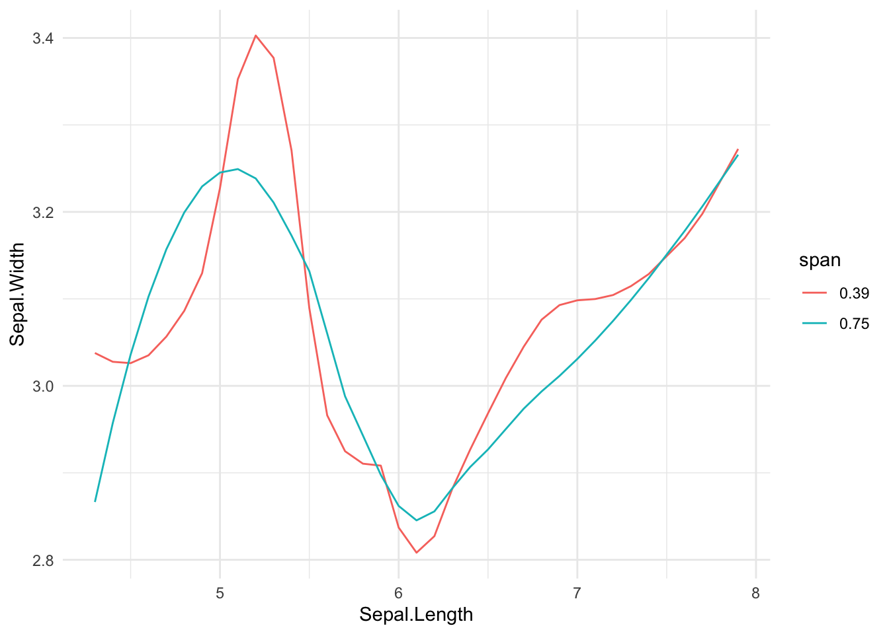
Other Regression Approaches
There are several additional approaches including Kernel Regression (e.g., Nadaraya & Watson’s Kernel Smoother) and Local Averaging (e.g., Friedman’s Super Smoother). If you need to perform a regression approach, please explore the benefits and challenges with these alternative methods before deciding on which one to use.
Mann-Whitney Test For the Equivallence of Two Means
So, this is an extension of the t-test for the equivalence of the mean values of two data sets (e.g., \(H_O: \bar{x} = \bar{y}\)). This assume that two sets of data are independently sampled and tests for the equality of the samples based upon ranks of the data in each set.
Assumptions
This approach has the following assumptions:
- Both sets of data are random samples from their respective population.
- Each of the populations are similarly independent.
- The measurement scale for each variable is at least ordinal (e.g., you can put them in order).
For this test, I’m just going to use the Motor Trends car data we’ve seen before and look at the mileage of cars that have a manual vs an automatic transmission. Here is the distribution of the data in a density plot.
mtcars |>
select( Transmission = am, MPG = mpg ) |>
mutate( Transmission = as.factor( Transmission ) ) |>
mutate( Transmission = fct_recode( Transmission, "Automatic"="0", "Manual"="1")) -> data
data |>
ggplot( aes(Transmission, MPG) ) +
geom_boxplot( notch=TRUE )Notch went outside hinges
ℹ Do you want `notch = FALSE`?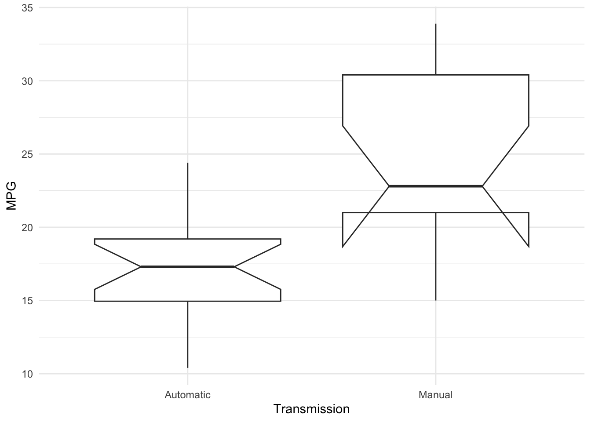
To test this, we use the Wilcoxon Rank Sum test. The signature of this test is:
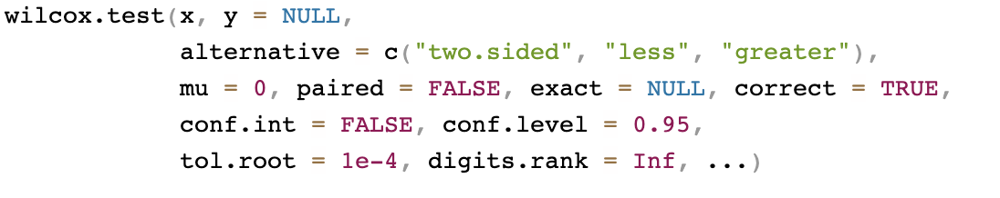
This will take the full set of data, assign them ranked values, and then determine if the ranked values are randomly distributed between the two groups.
fit <- wilcox.test( MPG ~ Transmission, data=data)Warning in wilcox.test.default(x = DATA[[1L]], y = DATA[[2L]], ...): cannot
compute exact p-value with tiesfit
Wilcoxon rank sum test with continuity correction
data: MPG by Transmission
W = 42, p-value = 0.001871
alternative hypothesis: true location shift is not equal to 0As for other analyses, the object returned has a number of elements that may be helpful in writing about the analysis.
names(fit)[1] "statistic" "parameter" "p.value" "null.value" "alternative"
[6] "method" "data.name" Kruskal-Wallis Test for Equivallence of Several Means
The Kruskal-Wallis test is an extension on the Wilcoxon test in the same way that the aov() is an extension of the t-test(). The approach is again based upon ranks. Here is an example data set we’ve used once before based on air quality measured across five different months.
airquality |>
select( Month, Ozone ) |>
mutate( Month = factor( Month ) ) |>
mutate( Month = fct_recode(Month,
May="5",
Jun="6",
Jul="7",
Aug="8",
Sep="9" )) |>
filter( !is.na( Ozone )) -> data
ggplot( data, aes(Month, Ozone) ) +
geom_boxplot(notch=TRUE)Notch went outside hinges
ℹ Do you want `notch = FALSE`?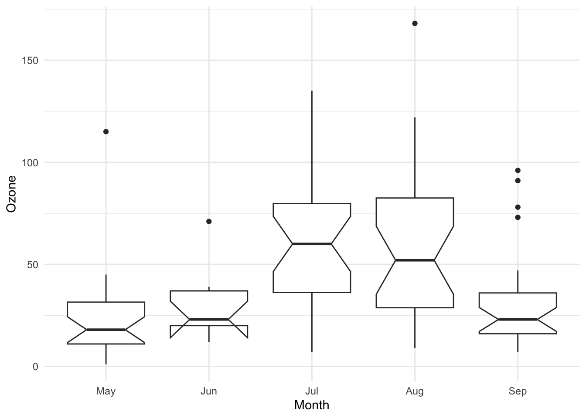
To test for the equality of ozone across months, we use kruskal.test()
fit <- kruskal.test( Ozone ~ Month, data=data )
fit
Kruskal-Wallis rank sum test
data: Ozone by Month
Kruskal-Wallis chi-squared = 29.267, df = 4, p-value = 6.901e-06And again, the object returned has the relevant parameters for inclusion in the text of your manuscript.
names(fit)[1] "statistic" "parameter" "p.value" "method" "data.name"Summary
These methods should get you going for pure counting statistics (\(\Chi^2\)) or for replacements to parametric approaches when you find that your data do not conform to their expectations. There is a whole universe of non-parametric approaches and extensions to the methods I highlight here and I encourage you to explore these methods in the future if you have an odd set of data that needs to yield proper insights.
Footnotes
Cochran, W.G. (1952) The \(\Chi^2\) test of goodness of fit. Annals of Mathematical Statistics, 23, 315-345.↩︎